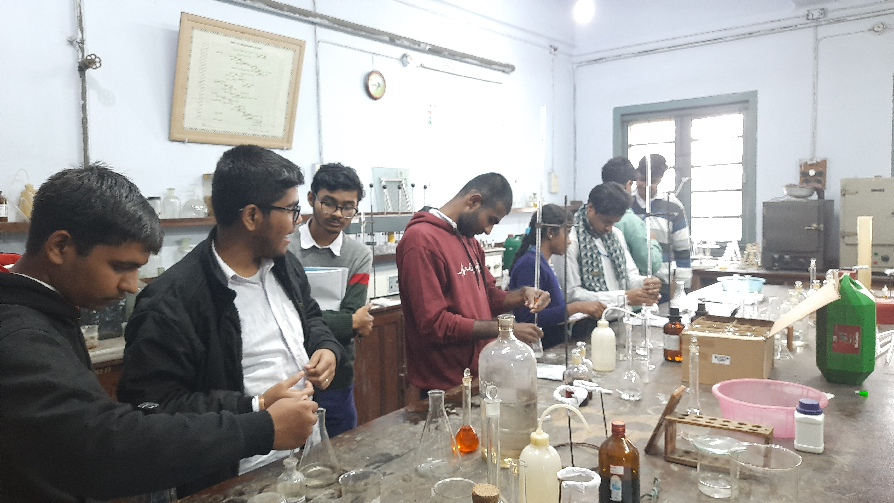
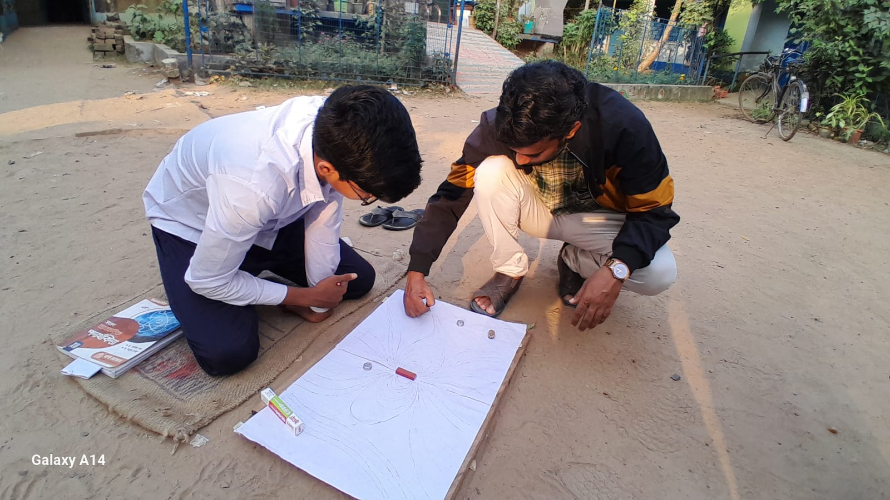
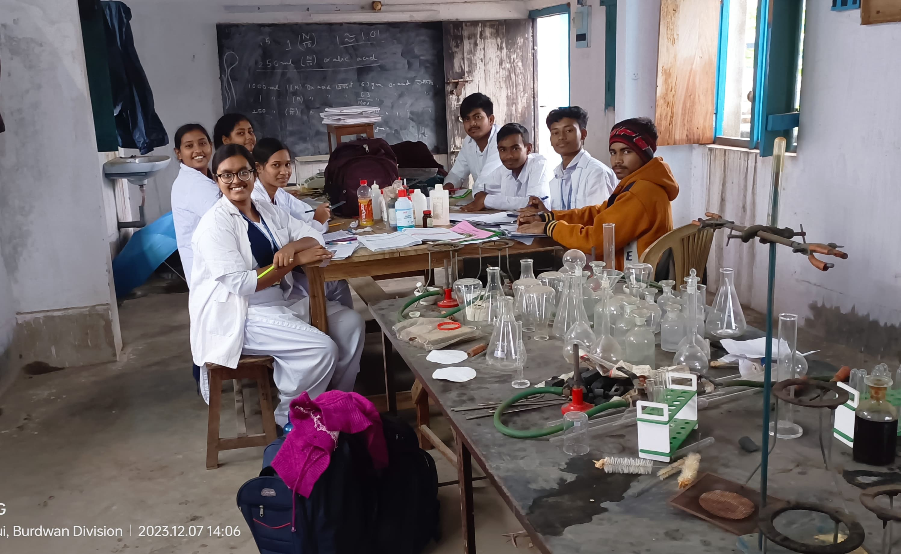

Innovation & Research
Scientific Exploration
Fostering innovation through hands-on practical learning and independent research in our state-of-the-art facilities.

Lab Activity
Engaging in practical experiments across Physics, Chemistry, and Biology to bridge the gap between theory and reality.

Field Study
Outdoor observational learning and data collection to understand environment, geography, and local ecosystems.

Project Work
Encouraging students to design and execute independent research projects and creative scientific models.